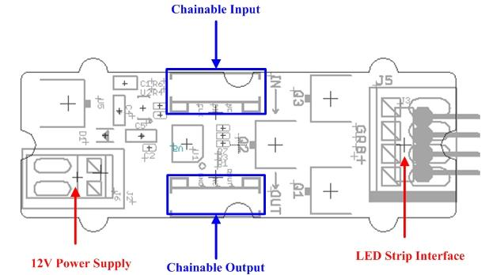
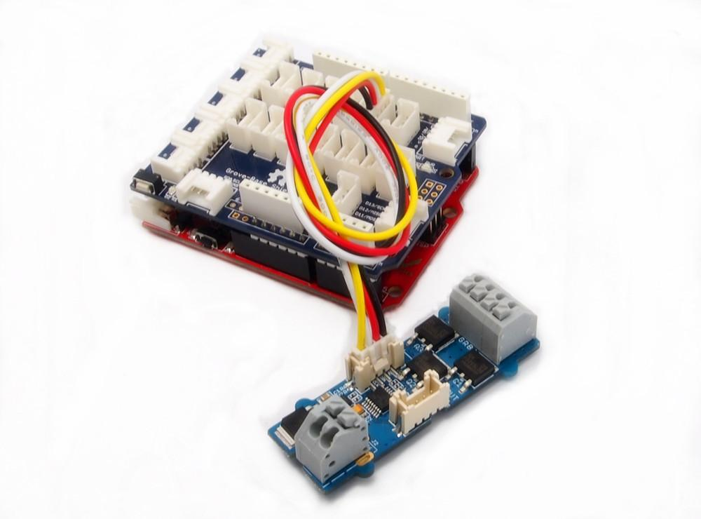
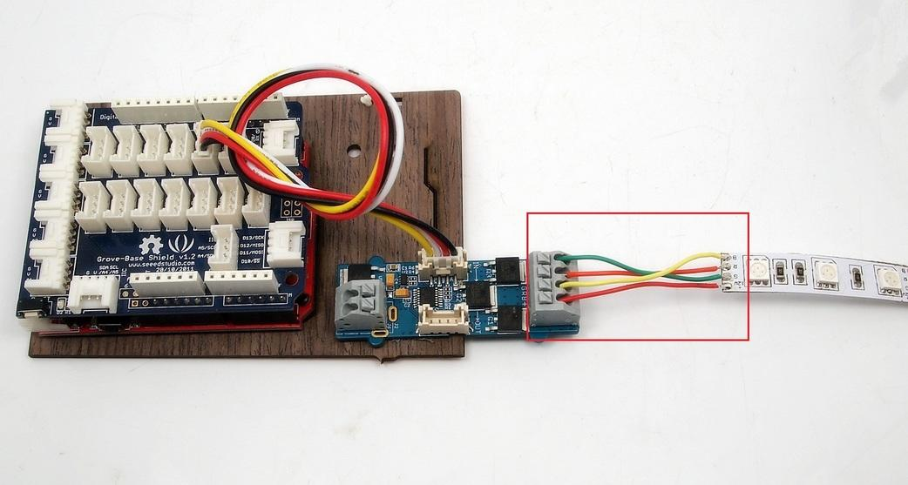
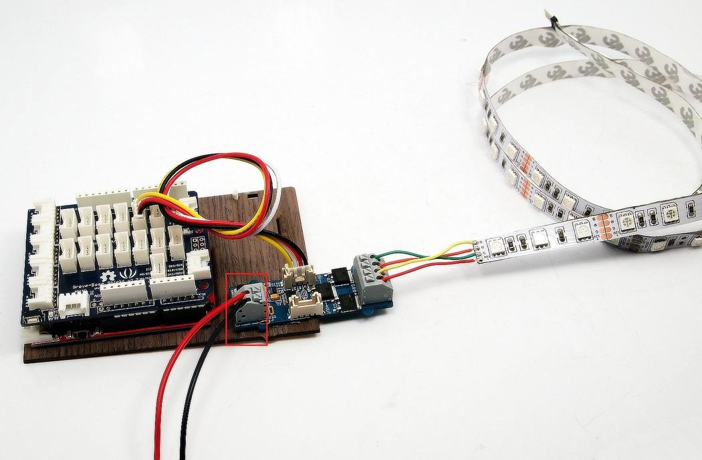
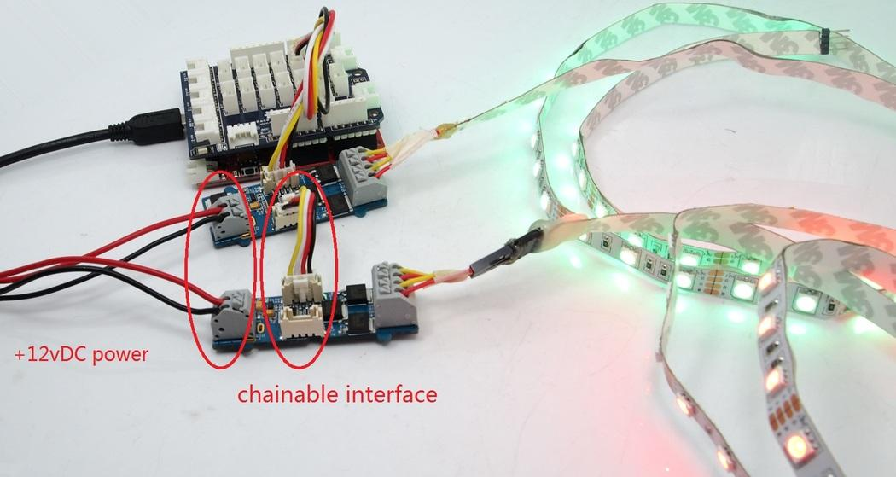

The LED Strip Driver with 4-pin Grove interface provides easy connectivity to your standard Arduino device or Seeed Stalker. It can help you control the luminance of a single-color LED strip, as well as the color and the luminance of an RGB LED strip through Arduino or Seeeduino.
It has 2 terminals and 2 Grove interfaces. The power for LED strip comes in through the 2-pin terminal. And the LED controlling voltages output through the 4-pin terminal. The 2 Grove interfaces are respectively screen-printed “IN” (for controlling data input) and “OUT” (for controlling data shared with the next strip driver).
It can drive an LED strip 1 to 2 meters long with 9 V, while 1 to 5 meters long with 12 V. The driver in conjunction with the colorful LED strips can add a wonderful effect to indoor or outdoor usages.
Model: LED05241P
1. SI5904 is used to level translation.
2. 78M05 is a Voltage Regulator, the output voltage is 5V.
1. replace SI5904 with two 2N7002.
2. The package of 100nF capacitors is 0603, not 0402.
3. 3.3K discrete resistors change to exclusion.
Note: clock/data IO requires 5V logic level.
| Power supply | LED Strip | LED Color | Length(m) | Max current(mA) |
| 12V/5A | RGB LED strip | White | 1 | 1032 |
| 2 | 1822 | |||
| 3 | 2430 | |||
| 4 | 2800 | |||
| 5 | 3000 | |||
| 9V/1A | RGB LED strip | White | 1 | 365 |
| 2 | 627 |

12V Power Supply – Screw terminal for 9~12v power supply.
Chainable Input – Connected to Grove - Base Shield] or the other driver's chainable output. Pin definition: CLK DIN NC GND.
Chainable Output – Connected to the other driver's chainable input. Pin definition: CLK DOUT NC GND
LED strip interface – Screw terminals for LED strip. Pin definition: + B R G
Note:VCC of Arduino/Seeeduino is not connected to the Grove interface.

1.Connect the Grove socket marked "IN" on the LED Strip Driver and digital port 2 on the Base Shield with a Grove cable.

2.Connect the LED strip to the 4 pin terminal of Grove - LED Strip Driver. Make sure the wire marked "+12v" of the LED strip goes into the seat marked "+" of the terminal, and "B" into "B","R" into "R" and "G" into "G".Most of the LED strips we are selling have 4 wires as the picture above except White LED Flexi-Strip - 60 LED - 1m. If this is the kind you are going to use, the connection steps can be a little different. Still plug the wire marked "+12V" into the seat marked "+", but the other wire can go into whichever seat of "B", "R" and "G". And run the demo code named "DemoForWhiteLEDStrip" instead in the following software steps.

3.Connect the 12V DC or 9V DC power wires to the 2 pin terminal.

4.In cases that you want to utilize the cascade feature, prepare another driver and strip first. Then use a Grove cable to connect the Grove socket marked "out" on the first board and the Grove socket marked "IN" on the second board. Done. Two strips will shine in sync now.